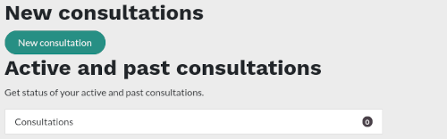
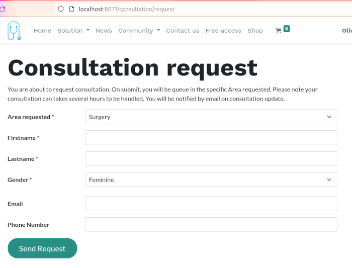

HCW@Home - remote consultation integration
HCW@Home is an Open Source Teleconsultation system, with video call support. This addon add a link from account portal used to let patient do remote consultation.
HCW@Home is maintained by Iabsis SARL based in Switzerland.
Screenshots
The patient has a new section in his portal where he can request consultation.
List of HCW@Home queues are fetched automatically and defined in list of area. Once the patient submit the consultation request, he will wait in the specific waiting queue where several doctors can handle the consultation.
Links
Configuration
- Open Odoo Settings and define the various HCW@Home URL and informations.
- Install one of the module hcw_athome_form or hcw_athome_form_doctor
Maintainer
This addon is maintained by Iabsis SARL. Get more information about us on our official website